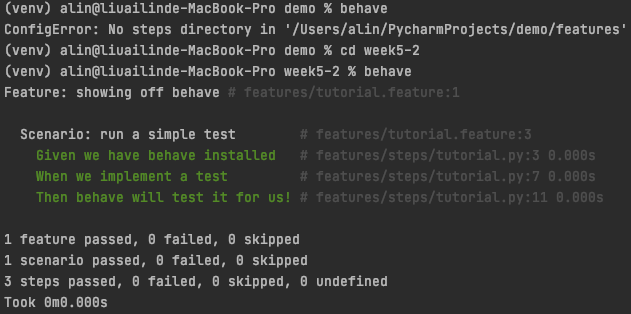

behave
官方文件：https://behave.readthedocs.io/en/stable/
安裝
pip install behave
配置
最低限制
features/
features/everything.feature
features/steps/
features/steps/steps.py
更複雜的例子
features/
features/signup.feature
features/login.feature
features/account_details.feature
features/environment.py
features/steps/
features/steps/website.py
features/steps/utils.py
完整範例
feature 範例
/features/tutorial.feature
Feature: showing off behave
Scenario: run a simple test
Given we have behave installed
When we implement a test
Then behave will test it for us!
step 範例
features/steps/tutorial.py
from behave import *
@given('we have behave installed')
def step_given(context):
pass
@when('we implement a test')
def step_when(context):
assert True is not False
@then('behave will test it for us!')
def step_then(context):
assert context.failed is False
context 是一個全域物件，可以存放共同使用的物件。
執行
behave
behave /features/tutorial.feature

支援其他語言
behave --lang-list
behave --lang-help zh-TW
Translations for Chinese traditional / 繁體中文
And: * , 而且, 並且, 同時
Background: 背景
But: * , 但是
Examples: 例子
Feature: 功能
Given: * , 假如, 假設, 假定
Rule: Rule
Scenario: 場景, 劇本
Scenario Outline: 場景大綱, 劇本大綱
Then: * , 那麼
When: * , 當
step 參數
# feature
When Enter first name "AILIN" and last name "LIOU"
@when(u'Enter first name "{first_name}" and last name "{last_name}"')
def step_impl(context, first_name, last_name):